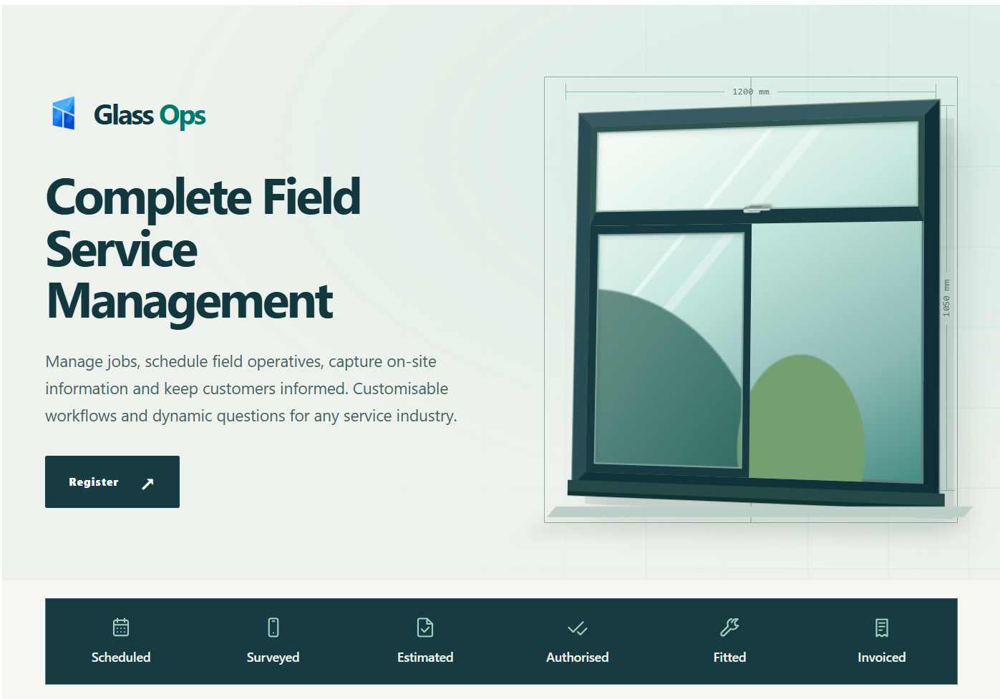
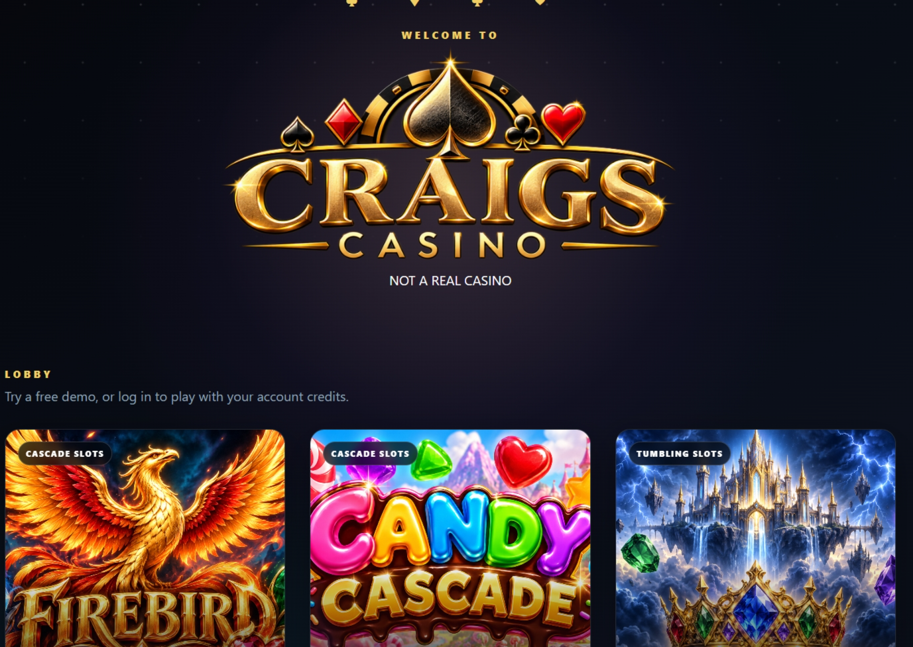

Application development
C#, C++, .NET, ASP.NET Core MVC, Razor, WPF and XAML.
INDEPENDENT SOFTWARE ENGINEER · MANCHESTER, UK
I design and develop dependable software that brings people, processes and technology together.
Over 20 years of hands-on experience across C#, .NET, business systems, web applications and mobile platforms.
Good software is more than clean code. It's an understanding of the people who depend on it.
I'm a Manchester-based software engineer with over two decades of commercial development experience. I began with C and C++, before specialising in C# and the wider .NET ecosystem.
My work spans desktop software, modern web platforms, REST APIs, databases and cross-platform mobile applications. I particularly enjoy the challenge of making different systems work together, from established business software to new, connected experiences.
More about my experienceComplex problems deserve considered, practical solutions.
Broad technical experience, with a particular focus on end-to-end application development and long-term maintainability.
C#, C++, .NET, ASP.NET Core MVC, Razor, WPF and XAML.
.NET MAUI, Android, REST APIs and synchronisation between mobile and business platforms.
SQL Server, Entity Framework Core, SQLite, LINQ and integration with 4D systems.
Visual Studio, Git, GitHub, Azure DevOps and CI/CD workflows.
Independent projects that explore real-world operational challenges and interactive software experiences.

Field service management, connected end to end.
A complete field operations platform connecting office teams, surveyors and fitters through scheduling, job management, surveys, photographs, signatures and mobile synchronisation.
Explore the platform
Exploring the playful side of software.
A browser-based collection of interactive casino-style games and concepts, developed to experiment with animation, user interfaces, graphics and server-side functionality.
Explore the projectA career shaped by practical problems, varied industries and the evolution of software engineering.
Club Systems International
Worked on golf administration and handicap platforms, including ClubV1 and HowDidiDo, using .NET technologies and Azure DevOps.
Martindales
Built field surveying and operational systems, with C# mobile applications and integrations into established 4D business systems.
Tailored Limited
Developed e-commerce solutions, web applications and Windows Mobile software using C++, MFC and database-backed services.
Interested in discussing a role, a technical challenge or one of my projects? I'd be pleased to connect.